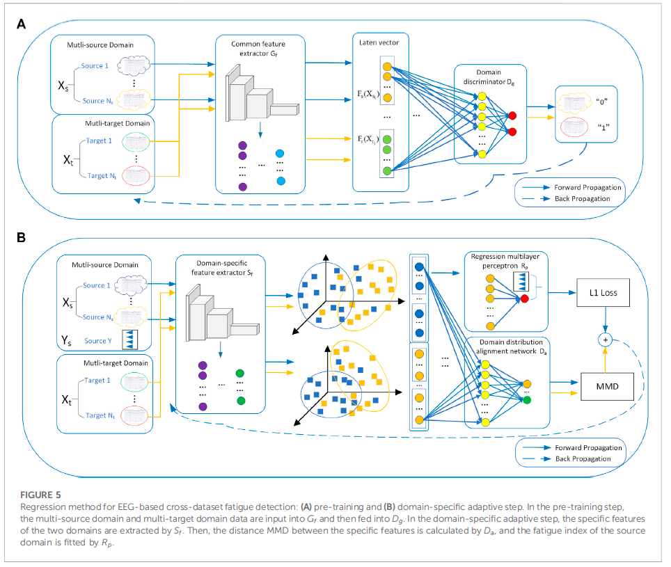
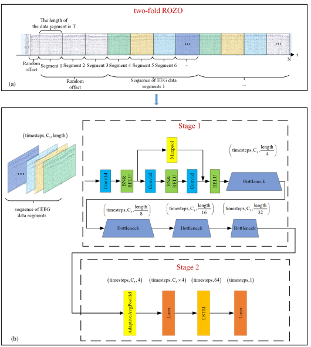

Duanyang Yuan
Position: Ph.D. Student (2024.09 – 2028.06)
Affiliation: National University of Defense Technology (NUDT)
Email: ydy_n1@nudt.edu.cn
Address: Changsha, Hunan, China
GitHub |
DBLP
About Me
Hi there, I am Duanyang Yuan (袁端阳). Currently, I am a Ph.D. student at the National University of Defense Technology (NUDT),
where she conducts research on intelligent decision-making methods for complex environments.
She received her M.S. degree from Shanghai University (2021–2024).
Her research interests lie at the intersection of planning and decision making,
knowledge graphs, large language models, and information retrieval,
with a particular focus on leveraging structured knowledge and retrieval mechanisms
to enhance reasoning, adaptability, and reliability in large language model–based systems.
Her recent work explores how symbolic structures (e.g., knowledge graphs and planning representations)
can be effectively integrated with neural models to address long-horizon reasoning,
multi-constraint planning, and information-intensive decision processes.
She has published peer-reviewed papers in top-tier venues such as AAAI,
Frontiers in Physiology, and related journals.
During her Ph.D. studies at NUDT, she is fortunate to be advised by
Researcher Jian Huang and Associate Researcher Sihang Zhou.
Research Interests
- Planning and Decision Making
- Knowledge Graphs and Reasoning
- Large Language Models
- Information Retrieval
- Retrieval-Augmented Generation
Selected Publications

Structured Knowledge-Guided Decision Making for Complex Planning Tasks
Duanyang Yuan, et al.
Proceedings of the AAAI Conference on Artificial Intelligence (AAAI 2025),
Oral
[Paper]

Knowledge-Driven Modeling and Analysis of Physiological Systems
Duanyang Yuan, et al.
Frontiers in Physiology, 2023
[Paper]

Instrumentation-Aware Data Modeling and Intelligent Measurement Analysis
Duanyang Yuan, et al.
Review of Scientific Instruments, 2023
[Paper]
News
- 2025 One paper accepted by AAAI 2025 (Oral).
[Paper]
- 2023 One paper accepted by Frontiers in Physiology.
[Paper]
- 2023 One paper accepted by Review of Scientific Instruments.
[Paper]
Manuscripts under Review
- One manuscript under revision for IEEE Transactions on Knowledge and Data Engineering (TKDE).
- One manuscript submitted to IEEE Transactions on Knowledge and Data Engineering (TKDE).
- One manuscript submitted to IEEE Transactions on Neural Networks and Learning Systems (TNNLS).
- One manuscript under review at IEEE Transactions on Pattern Analysis and Machine Intelligence (TPAMI).
Selected Fundings
-
Principal Investigator (PI), Hunan Provincial Ph.D. Student Research Innovation Program
Professional Services
- Reviewer for IEEE Transactions on Knowledge and Data Engineering (TKDE), 2025
- Reviewer for Information Fusion (IF), 2025
Selected Honors & Scholarships
- China National Scholarship
- National Inspirational Scholarship
-
China College Students Self-Improvement Star Scholarship
[Link]
-
Published Commendation (Campus Edition, Page 09)
[Link]
Competitions
- National Second Prize, CAA Unmanned Systems Embodied Intelligence Algorithm Challenge (Quadruped Robot)
- National Third Prize, China Graduate Electronic Design Contest
- First Prize, National Mathematical Modeling Contest (Shanxi Division)
- First Prize, National College Mathematics Competition (Shanxi Division)
- Second Prize, NXP Smart Car Competition (North China Division)
Talents
- Running
- Fitness Training
- Musical Instruments